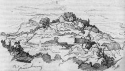
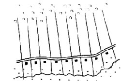
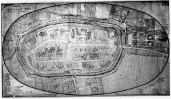
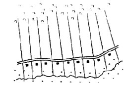
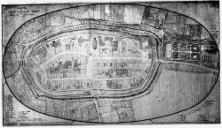

Schaumburg im Mittelalter - Entwicklung grundlegender Strukturen
Die Schaumburg (aus dem Skizzenbuch von Wilhelm Busch)
Schema eines Hagenhufendorfes
Stadtplan von Stadthagen (Houpe-Plan)
Der Name "Schaumburg" ist von der gleichnamigen Burg herzuleiten, die zwischen Rinteln und Hameln auf dem Wesergebirge liegt und das Wesertal beherrscht. Nach dieser Burg benannte sich ein Adelsgeschlecht, das im Mittelalter einen steilen Aufstieg erlebte.Schema eines Hagenhufendorfes
Stadtplan von Stadthagen (Houpe-Plan)
Im Jahre 1110 belehnte der Sachsenherzog Lothar von Süpplingenburg, der nachmalige Kaiser Lothar III. (1125-1137), den Edlen Adolf von der Schaumburg mit den Grafschaften Holstein und Stormarn. Seine Herkunft ist unbekannt; er wird aber der Erbauer der Schaumburg, nach der er sich nannte, gewesen sein. Das ist die erste Erwähnung des Geschlechts und der Burg.
Adolf sollte die gefährdete Slawengrenze verteidigen. Er und seine Nachfolger haben in Ostholstein aber auch kolonisiert. Hamburg wurde von Graf Adolf I. erweitert, Lübeck von Graf Adolf II. im Jahre 1143, Kiel von Adolf IV. zwischen 1233 und 1242 als Stadt neu angelegt, Plön, Eutin und Travemünde entstanden unter ihrer Führung. So stiegen die Schaumburger zu einem der bedeutendsten Geschlechter an der südlichen Ostsee auf. Sie verschwägerten sich mit den Königen von Schweden und Dänemark, mit den Herzögen von Sachsen-Lauenburg, Braunschweig-Lüneburg und Mecklenburg. Eine Linie wurde zu Herzögen von Schleswig. Die gemeinsame Geschichte des Landes Schleswig-Holstein und des Landkreises Schaumburg wird symbolhaft im Wappen ausgedrückt: Das Nesselblatt ist ebenso Teil des schleswig-holsteinischen Wappens wie Symbol des Landkreises Schaumburg.
Die Grafen von Holstein-Schaumburg waren im Gebiet zwischen Steinhuder Meer und Hameln zunächst nur punktuell mit Gütern und Rechten begabt. Mit ihnen konkurrierten die Grafen von Roden, die Bischöfe von Minden und die Herzögen von Sachsen. Erst im Laufe des Hochmittelalters haben sich hier die Schaumburger durchgesetzt und ein geschlossenes Territorium geschaffen.
Ein Mittel, dessen sich die Schaumburger zur Ausdehnung und Festigung ihres Herrschaftsbereichs bedienten, war die planmäßige Rodung und Aufsiedlung des Urwaldgebiets (Binnenkolonisation) nördlich der Bückeberge, der Stadthäger Ebene. Der Schaumburger Wald ist ein Rest des Dülwalds, eines Urwalds, der bei der Kolonisation im 13. Jahrhundert verschwand. Es entstanden die Hagenhufendörfer (z.B. Pollhagen, Probsthagen, Vornhagen) mit besonderem Recht und mit einem typischen Grundriss: An einer Straße liegen kilometerlang nebeneinander handtuchförmig gereiht auf der einen Seite die schmalen Äcker, gegenüber auf der anderen Seite die Höfe mit Wiesen und Weiden.
Zu den ältesten schriftlich bezeugten Siedlungen in Schaumburg gehören die beiden Klöster Möllenbeck und Fischbeck im Wesertal. Das älteste überlieferte Schriftstück in Schaumburg ist eine Urkunde für das Kloster Möllenbeck vom 13.8.896, ein Benediktinerinnen-Kloster, das 1441 in ein Augustiner-Kloster umgewandelt wurde, ehe es nach der Reformation 1559 ev. Kanonikatstift und nach dem 30jährigen Krieg hessische Domäne wurde, mit deren Gütern die 1621 gegründete Universität Rinteln ausgestattet wurde. Die Stiftskirche, seit 1836 ev. reformierte Pfarrkirche, ist eines der bedeutendsten Denkmale der Spätgotik im mittleren Wesergebiet. Die beiden markanten Treppentürme sind Reste eines romanischen Westwerks.
Das Damenstift in Fischbeck wurde am 10.1.955 gegründet (der Ort wird in einer Kaiser-Urkunde von 892 erwähnt und ist der älteste urkundlich belegte Ort in Schaumburg). Mitte des 13. Jahrhunderts wurde die Augustinerregel eingeführt. Nach der Reformation wurde es in ein freies Reichsstift verwandelt, das bis heute als ev. Damenstift weiterlebt. Die romanischen Bauformen aus der Zeit um 1100 und die Geschlossenheit der Anlage machen es zu einem bemerkenswerten Beispiel mittelalterlicher Klostertradition. Fischbeck gehört als Teil der politischen Gemeinde Hessisch Oldendorf seit der Verwaltungsreform nicht mehr zu Schaumburg.
Als ev. Damenstift hat ebenfalls das ehemalige Augustiner-Nonnenkloster Obernkirchen überlebt, das kurz vor 1167 gegründet wurde. Die Propstei hatte 1498 auch Einkünfte aus dem Kohlenbergbau; die diente zur Ausstattung der 1621 gegründeten Universität Rinteln. Die spätmittelalterliche Hallenkirche mit doppeltürmigem romanischen Westriegel wird auch als ev. Pfarrkirche genutzt.
Im Jahre 1225 wurde das Zisterzienserinnenkloster Bischoperode bei Stadthagen nach Rinteln verlegt (später Benediktinerinnen). Nach der Reformation wurden seine Gebäude 1621 von Fürst Ernst der neu gegründeten Universität übergeben, seine Güter zu ihrer Ausstattung verwandt. Nach Aufhebung der Universität 1810 wurden die Gebäude abgerissen und statt dessen das Gymnasium Ernestinum errichtet. Von den mittelalterlichen Gebäuden ist nur die hochgotische Kirche erhalten, die heute als ev. reformierte Pfarrkirche dient.
Auch die Einkünfte des 1298 gegründeten Augustinerinnen-Klosters Egestorf wurden zur Ausstattung der Universität Rinteln verwandt. Es verschwand, ohne augenfällige Spuren zu hinterlassen. Vom Franziskanerkloster in Stadthagen, das 1486 errichtet wurde und nur kurze Zeit bis zur Reformation existierte, ist allein der Chor der gotischen Kirche stehengeblieben, der bis heute von der ev. reformierten Gemeinde als Gotteshaus genutzt wird.
Zu den Maßnahmen des mittelalterlichen Landesausbaus gehörte auch die Gründung und Erweiterung von Städten. So wurden Stadthagen am Hellweg und Rinteln an der Weser, Oldendorf an der Straße von Minden nach Hildesheim von den Schaumburger Grafen um 1225/30 planmäßig angelegt. Stadthagen und Rinteln erhielten Lippstädter Stadtrecht und eine Befestigung, die am Beginn des 19. Jahrhunderts zur Parkanlage umgestaltet wurde und als solche - für jedermann leicht erkennbar - in der Gegenwart die mittelalterliche Altstadt umringt. Eindrucksvolle Bürgerbauten, Rathäuser und Pfarrkirchen zeugen vom Wohlstand und Selbstbewusstsein ihrer Bürger, Burgmannshöfe von der Attraktivität der Stadt auch für ritterbürtige Familien der Umgebung.
Die bürgerlichen Siedlungen in Bückeburg und Rodenberg sowie in Hagenburg (gegründet von den Grafen von Roden) und Sachsenhagen (gegründet von den Askaniern) knüpften an landesherrliche Burgen, Möllenbeck und Obernkirchen an das jeweilige Kloster an; die Fischersiedlung Steinhude stand unter dem Einfluss des Kanonissenstifts Wunstorf. Ihre rechtliche und wirtschaftliche Entwicklung blieb wohl hinter den Erwartungen ihrer Gründer zurück; sie verblieben im Range von Minderstädten. Bückeburg erhielt 1609, Obernkirchen und Rodenberg 1615, Sachsenhagen 1650 Stadtrechte. Möllenbeck entwickelte sich am Ende der Mittelalters sogar zum Dorf zurück.
Durch geschickte Politik hatten sich die Schaumburger Grafen in ihren Stammlanden - der holsteinische Besitz hatte sich seit dem hohen Mittelalter auf die Herrschaft Pinneberg mit Altona reduziert - ein zusammenhängendes kleines Territorium geschaffen. Von Adelsgeschlechtern wie Braunschweig-Lüneburg wurden sie für ebenbürtig angesehen; so heirateten in der zweiten Hälfte des 15. Jahrhunderts von den 10 Kindern Ottos II. Tochter Mechthild (+ 1468) gleich zwei Braunschweig-Lüneburgische Herzöge hintereinander, Anton (1474-1526) eine Tochter des Herzogs von Sachsen-Lauenburg und Johann (1498-1527) die Cordula von Gemen, die als Mitgift die Herrschaft Gemen im Münsterland (einschließlich der Herrschaft Bergen in Nordholland) in die Ehe einbrachte. Auch als Fürstbischöfe machten die Grafen von Schaumburg bis zum Ende des Mittelalters Karriere: Drei Bischöfe zu Hildesheim, fünf Bischöfe zu Minden, ein Bischof von Olmütz - nicht gerechnet die anderen geistlichen Würdenträger in den Domkapiteln - stammten aus dem Schaumburger Grafenhaus; zwei Grafen von Schaumburg (Adolf 1547-1556; Anton 1556-1558) waren sogar Erzbischöfe von Köln und damit Kurfürsten des Reiches.